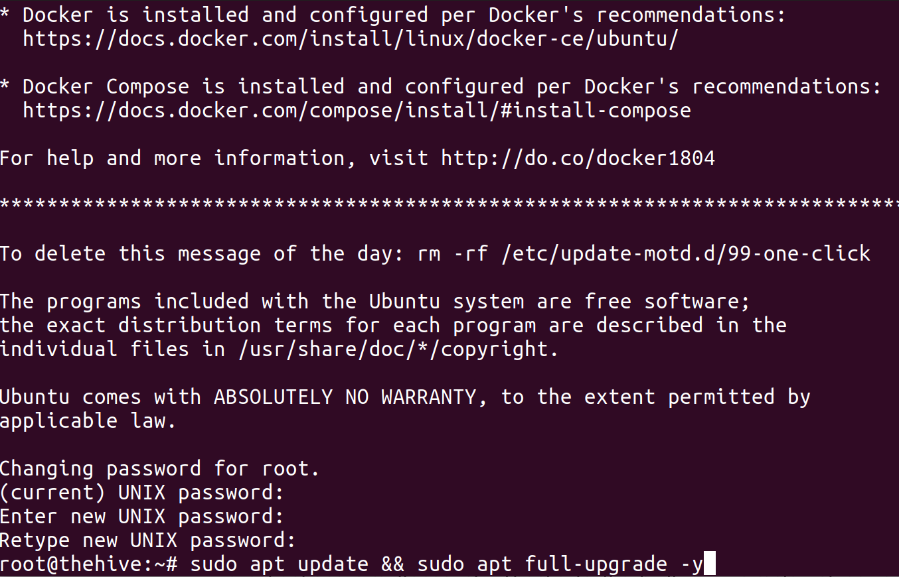

Installing The Hive Project
November ??, 2019
The Hive Project is a open source SOC tool, one of many I saw at Pacific Hackers 2019 and one that I found interesting for the spring Bay Area Regionals Competition. While at the time of this writing I cannot give any specifics to the game, I see no problem saying what tools students will be using in order to get them to do research ahead of time. So this will focus on getting an instance of The Hive Project installed and ready to go.
Setting up the VM
First step is to get a VM with Docker and Docker Compose. If you have read my earlier posts, I recommend Digital Ocean for this, as they have a VM image ready to go with everything required. Create an image with more than 8 GB of RAM.

With this image ready to go, we will proceed to changing the password and then updating the system.
Installing The Hive Project via Docker
Per their directions here, you should create a docker-compose.yml file with the information provided. This should do the heavy lifting for you and create the system, with The Hive accessible on your VM's address port 9000.
Verify all three instances are up and running by running docker container ls. If you see three VMs, you should be good to go. I ran into an issue where elasticsearch was not running because it didn't have enough memory. What fixed this was the solution from here.
After the command calms down and all three VMs are up, the site should be ready to be accessed. Go to your IP address and add port 9000 to access the system (i.e. 192.168.1.1:9000). Upon going to the hive's site, it should ask you to update the database (the button will do the trick) and then proceed to make your administrator account. You should also do the same on the Cortex site (Cortex can be accessed by the same IP address, but at port 9001.)
Configuring the Hive Project
Cortex Configuration
Staying within Cortex, login with your newly created administrator and create an organization (cortex is the default and won't be used in The Hive). Information has been gathered from here for your reference.
Create users for the organization (I made two, one to be the orgadmin and a regular user. Don't forget to create passwords for them to login). The regular user with read and analyze permissions will be useful later.
Log back in as the orgadmin for this new organization you have made. This will give you a different look with things we need to configure. Go to the Organization > Analyzers Config section.
In order to get these working, you will need to provide information. Taking Virustotal as an example, you first need to have an account with VirusTotal to insert the API key in the analyzer.
After that, go to the Analyzers section and scroll to VirusTotal. Hit Enable and then save the settings (verify that the API key is there).
The Hive Configuration
Before working in The Hive, we need to make a quick change. Reconnect to your Digital Ocean VM via SSH if you closed that connection earlier.
Per the instructions from this link, create a file called "application.conf" and add your second user's information made in Cortex and server information to the file. Next, copy the file from your VM into the container like so:
In the Hive, create an administrator and login. As with Cortex, you will need to create a new account that isn't administrator and login as that user in order to use it. Though this seems tedious, it is a good security measure made by the creators of The Hive Project.
Once logged in as your new admin, import the zip file from this document into your instance (see the file for location).
Verifying Everything Works
Create a new case and add an observable file (you can use malware1 from CIS 75 Module 2; the password to decrypt is infected. You will also have to decode the file "malware1" from base64 to a windows executable).Logging in with your new account gives you access to the system! Feel free to use my Security+'s malware introduction to see this tool at work.